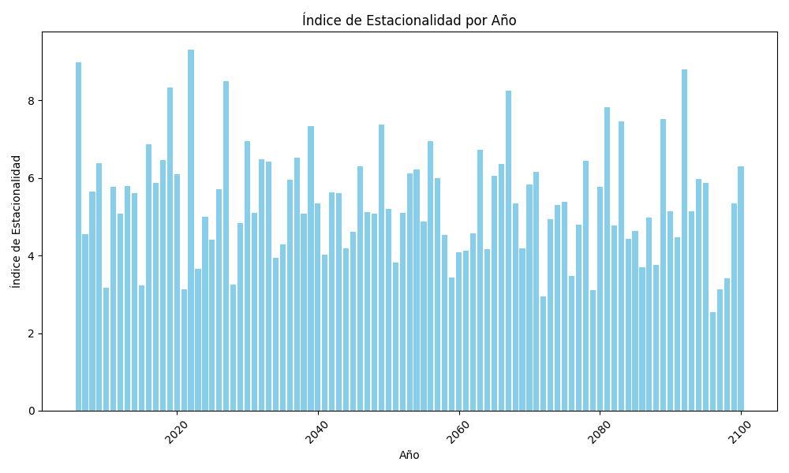

Índice de Estacionalidad

Este índice representa la variación periódica y predecible de las lluvias, con un período inferior o igual a un año. Su objetivo es identificar cuán irregulares son las lluvias a lo largo del año.
- Si el índice de estacionalidad de un período es 100, significa que no hay desviación respecto al comportamiento general de la serie.
- Si es superior a 100, indica que en ese período la variable tiene un valor mayor que la media global.
- Si es inferior a 100, sugiere que en ese período la variable tiene un valor inferior a la media global.